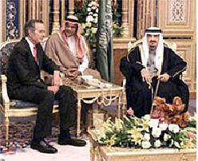
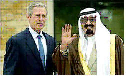

~
Statecraft In Banking
The Business of Banking and the Banking of Business: Keys to the Funding of Terrorism
"What we want to have in existence, what we ought to have been creating in this time is some administration with Arab institutions which we can safely leave while pulling the strings ourselves; something that won't cost very much, which the Labour government can swallow consistent with its 'principles', but under which our economic and political interests will be secure. [.....] If the French remain in Syria we shall have to avoid giving them the excuse of setting up a protectorate. If they go, or if we appear to be reactionary in Mesopotamia, there is always the risk that [King] Faisal will encourage the Americans to take over both, and it should be borne in mind that the Standard Oil company is very anxious to take over Iraq." - Sir Arthur Hirtzel, Head of the British government's India Office Political Department, in the year 1919.

George Herbert Walker Bush and Carlyle Group Pals
What we are learning presently has to do with CIA-dominated banks arranging the
financing of terrorism. To begin to look into that can of worms we notice al
Qaeda's relationship with BCCI, and the Saudi bin Laden Group's involvement with
BCCI.
Just as the CIA used BCCI to facilitate illegal arms shipments to Iran, CIA also used BCCI in some of the funding programs for Osama bin Laden's Mujahedeen, which CIA trained and armed in Afghanistan to thwart the USSR in its effort to regain control over the government in Kabul. (The USSR had lost control over Kabul in 1979 when Zbigniew Brzezinski and President Jimmy Carter injected the CIA into Kabul to destabilize Afghanistan. Prior to that, Kabul had been a USSR puppet government. According to Brzezinski, the “chess move”, the move to insert CIA into Kabul, could possibly lure the USSR into inserting uniformed troops, whereupon, in Brzezinski's vision, the U.S.A. could hand the USSR “its own Vietnam War”. What Brzezinski meant by that was that if the CIA could lure the USSR into placing uniformed troops in Afghanistan, the CIA could then finance a guerrilla resistance and use that resistance to drain the USSR's economy, while at the same time engendering the same sort of nation-dividing conflict which Russia and China had financed against the USA when we were drawn into uniformed warfare in Viet Nam. More on that elsewhere.)
Brzezinski was right. That is exactly what happened. Six months after Carter put the CIA into Kabul, the USSR invaded, and the resulting Afghan war, in ten years of costly fighting against guerrilla forces trained and armed by CIA, depleted the USSR's economy, leading, in major part, to its fall in 1989-91. (Apparently Goldman-Sachs and the Harvard Fund, and a few others, assisted in the plunder of the Soviet economy, assuring its collapse.) But I digress. To fund support of the Mujahedeen, CIA needed ways to transfer funds. With Nugan-Hand Bank no longer available, BCCI, which CIA had already discovered could do the trick, was used by CIA. (I do not mean to imply that CIA used only BCCI.)
But of course banks would be nothing without the corporate structure, the myriad companies which glean the flow of various wealths, such as the gross national product of any industrialized nation. Let's now look overseas, with an eye open for Khalid bin Mahfouz, and see how things work internationally.
From the book by Jean-Charles Brisard and Guillanne Dasquie, “Forbidden Truth: U.S.-Taliban Secret Oil Diplomacy And The Failed Hunt For Bin Laden”, ( _ ) and at risk of completely exploding my software's “spell-check” feature, I am going to type in here some lengthy sections which I hope shall open a new window of perspective. I shall begin on page 119. We should keep in mind that President Bill Clinton had hit the Al Shifa pharmaceutical factory in Sudan with “Monica Missiles” (so named because his scandal with Ms Lewinski, [and more importantly - his treasonous transfer of sensitive satellite technology to Red China], appeared to call for distractive headlines, suggesting to critics of the Clinton Administration a variation on the “wag the dog” scenario).
~
Begin quoted passages from “Forbidden Truth”, page 119:
In 1976 [BCCI] tried to purchase the National Bank of Georgia with the cooperation of its president, Thomas Bertram Lance, one of Jimmy Carter's associates, who would become the president's budget director. The BCCI's agreement with the Bank of America did not, however, allow it to have stakes on American soil. Two American lawyers stepped in to handle negotiations. They were Clark M. Clifford and Robert Altman, associates of Thomas Bertram Lance. In 1977, the BCCI and Ghaith Pharaon bought the Bank of America's holding in the BCCI (for $34 million). The same year, the BCCI tried to purchase another American bank, the Chelsea National Bank. The offer was presented by the Gokal family, with the BCCI acting as financial adviser. But American regulators refused the deal because of the ties between the BCCI and the Gokals. The BCCI was subjected to American laws requiring the monitoring of all foreign banks investing in the United States because it was registered in countries without sufficient regulations.
Ghaith Pharaon, who already had investments in several banks in Detroit and Houston – acquired with the support or in partnership with the former governor of Texas, John Connally – was put in contact with Thomas Bertram Lance.
Ghaith Pharaon made an offer to buy the National Bank of Georgia in 1977 and appointed Roy Carlson - formerly of the Bank of America – its manager. It turned out that the BCCI had granted Ghaith Pharaon a loan for this purchase, and that he was acting as a screen for the bank.
At the end of 1977, Eugene Metzger, and Jackson Stephens, an associate of Thomas Bertram Lance and Jimmy Carter, were looking for a buyer for Financial General Bankshares. Represented by a group of investors, the BCCI decided to buy IDB. The investors included Kamal Adham, Faisal Al-Fallaj, Sheikh Sultan bin Zayed Al-Nahyan, and Abdullah Darwaish. The group attempted to buy the company's stocks without declaring the purchase. Federal authorities, in turn, forced them to sell back the shares. In order to get around this problem, the interested parties created the Credit and Commerce American Holdings (CCAH) in 1978 in the Dutch Antilles, and made Clark Clifford, Robert Altman, Jack W. Beddow, and A. Vincent Scoffone its managers. In 1980, the holding company announced its purchase of Financial General Bankshares. Federal authorities approved the purchase in 1982, deeming that the BCCI was neither financing nor directing the takeover. Managed by Clark Clifford, Robert Altman, and Aijaz Afridi, the bank became the First American Bank. It wasn't until 1991 that federal authorities discovered a loan granted to CCAH by the Banque Arabe et Internationale d' Investissement (BAII), a French institution closely linked to the BCCI, headed by Yves Lamarches. The guarantor on the $50 million loan was a BCCI subsidiary in the Cayman Islands. In addition, one of the shareholders in the CCAH was Mashriq Corp., also a BCCI subsidiary. Finally, it was discovered that between 1980 and 1989, the BCCI had granted loans to the CCAH for a total of $856 million.
In 1985, Ghaith Pharaon proceeded with the purchase of the Independence Bank, another American institution, thanks to a loan granted on the basis of a letter of credit from the BAII. In 1986, he sold a part of his stake in the BCCI to Khalid bin Mahfouz and his brothers, who became 20 percent shareholders in the bank. This wouldn't stop the FBI and the IRS from issuing an arrest warrant against Ghaith Pharaon in 1991 for tax fraud in the BCCI affair, as well as extortion in the United States. (snip)
Following Manuel Noriega's arrest in 1989, American judicial authorities revealed that the BCCI, in particular Amjad Awan, was in charge of managing the former dictator's personal accounts, as well as those of several drug traffickers in Panama. The BCCI participated in the laundering of $25 million from Manuel Noriega'a accounts. The BCCI also had ties with several weapons traffickers, as well as with Abu Nidal, whose secret accounts were handled out of a London branch. The BCCI facilitated financial operations for Iraqi arms dealer Samir Najmadeen, as well as for Adnan Kashoggi, one of Kamal Adham's close contacts. Kashoggi was secretly selling arms to Iran, and at the same time was in contact with an Iraqi intermediary, Manucher Ghorbanifar.
In 1987 the BCCI financed the purchase of high-resistance steel for General Inam Ul-Haq, who was in charge of the Pakistani nuclear arms program. The bank also financed the creation of a high-tech research center run by the head of Pakistani nuclear research, A. Qadir Khan.
(snip- begin quoted passages on page 130)
The fact that associates of Khalid bin Mahfouz held important management and executive positions in the Al Shifa pharmaceutical factory is another testament to the involvement of powerful Saudi businessmen in Osama bin Laden's networks.
One such Saudi businessman, Saleh Idris, of Sudanese descent, had owned the factory since April 1998, before it was the object of American military strikes on August 20, 1998. The United States estimated that the factory may have been manufacturing chemical weapons. Before this date, the CIA believed that Osama bin Laden was a main shareholder in this factory, investing through dummy companies. An American investigative agency, Kroll Associates, concluded that it was unlikely the factory was developing chemical weapons. [EA note: Kroll has partnered, perhaps in 2004, with “Pre-Paid Legal, Inc.” out of Oklahoma, and those two companies now offer Americans a “legal insurance” package which includes, for about ten additional dollars per month over Pre-Paid's customer fee, Kroll's “identity-theft insurance”. Kroll is also associated with CIA.]
However, Saleh Idris is linked through several investments to Khalid bin Mahfouz and Mohammed Al Amoudi. These ties shed new light on what was at stake in the Al Shifa factory.
Saleh Idris is involved in Al-Majd General Services Ltd, located at the headquarters in Khartoum of Abu Fath Al-Tigani Investment Intena, which is a subsidiary of the Tadamon Islamic Bank, shareholder of the Al Shamal Islamic Bank, one of Osama bin Laden's main financial vehicles.
Saleh Idris is also manager of the Saudi Sudanese Bank, whose president is none other than Khalid bin Mahfouz. Throughout the 1980s, Saleh Idris was even a board member of the Saudi National Commercial Bank. Saleh Idris is also Mohammed Al Amoudi's partner within the British company M.S. Management Ltd., with Nasrullah Khan.
Khalid bin Mahfouz is one of the leading shareholders (25 percent) in the International Bank of Yemen, of which the Bank of America owns 20 percent. The Yemenite bank is led by Ahmed Kaid Barakat and Ali Lutf Al Thor. The bin Mahfouz family also owns a moving company based in Jedah called Marei Bin Mahfouz and Ahmad Al Amoudi Co. of which Mohammed Hussein Al Amoudi is a shareholder in the company.
Al Amoudi is also president of Al Amoudi Group Company Ltd of Saudi Arabia, one of the kingdom's leading conglomerates, whose chairman, Sheikh Hamed bin Ali Mussalam, was implicated in the Sawari-2 affair. Mussalam is also an associate of the founder of International Development Foundation in London.
The bin Mahfouz galaxy is not only made up of dubious investments, but its creator gives a new dimension to business relations. He was able to establish such relations in the past, notably with the United States.
A Pakistani bank in which he is the main shareholder is a good example: Prime Commercial Bank is run by Sami Bubarak Baarma, a Saudi Arabian citizen born in 1955; Saeed Chaudhry; and Abdul Rahman bin Khalid bin Mahfouz, son of Khalid Mahfouz.
Sami Mubarak Baarma is an executive of SNCB Securities Limited in London, another bin Mahfouz subsidiary. For the NCB, he manages a financial network called Middle East Capital Group (MECG), based in Lebanon. One of MECG's directors is Henry Sarkissian, who runs several companies in the Binladen Group. Sami Mubarak Baarma is also in charge of the Saudi National Commercial Bank's international division. As a result of his influence in Pakistan, he became a member of the Carlyle Group's advisory committee.
The Carlyle Group's leading investors include many figures from former U.S. President George H.W. Bush's entourage, as well as that of President George Walker Bush. Its board of directors includes important figures from the Bush team: James A. Baker III, former secretary of state under the first President Bush; Frank C. Carlucci, former secretary of defense under Ronald Reagan; Richard G. Darman, former director of the Office of Management and Budget under George H.W. Bush between 1989 and 1993; and John Sununu, former White House chief of staff under George Bush. In addition, Saudi Prince Al-Waleed bin Talal, nephew of King Fahd, owns an indeterminate stake in the group. Even President George W. Bush was a member of the board of directors of one of the Carlyle Group's subsidiaries, Caterair, between 1990 and 1994.
In 1987 an obscure Saudi financier named Adbullah Taha Bakhsh invested in Harken, a Texas oil company, which was going through difficult times. This Saudi investor is none other than the partner of Khalid bin Mahfouz and Ghaith Pharaon. And so Taha Bakhsh became an 11.5 percent shareholder in Harken Energy Corp.
His representative within Harken Energy is not unknown either. Talat Othman, is a member alongside Frank Carlucci of one of America's most prestigious thinks tanks, the Middle East Policy Council, as well as being a leading Arab-American supporter of the Republican Party.
These investors knew each other well. They've been sitting on the same boards for more than ten years, along side Salem bin Laden, the brother of Osama bin Laden who died in a plane crash in Texas in 1988.
It is therefore not surprising to find James R. Bath on the list of shareholders in two other companies controlled by George W. Bush – Arbusto '79 Ltd. and Arbusto '80 Ltd. In the late 1970s, James R. Bath, a wealthy Texas entrepreneur, invested $50,000 in these companies to get them off the ground. At the time, he was the U.S. business representative for Salem bin Laden according to the terms of a 1976 trust agreement. It came out later, in 1993, in an official U.S. document, that he was also the legal representative of Khalid bin Mahfouz. [EA note: James R. Bath, of Houston, Texas, met George Walker Bush when they served together in the Texas Air National Guard during the Vietnam conflict.]
The two entities founded by George W. Bush were later merged with Harken Energy; all traces of these transactions have disappeared.
Khalid bin Mahfouz was very active in Texas at the time. During a deposition before the Financial Crimes Enforcement Newwork (FinCEN), James R. Bath claimed to own Skyway Aircraft Leasing Ltd, which in fact belonged to Khalid bin Mahfouz.
[Question date] Mahfouz procured a loan of $1.4 million for James R. Bath, allowing him to buy a stake in the Houston Airport. Following Salem bin Laden's death in 1988, Khalid bin Mahfouz took back this holding.
But the bin Mahfouz empire also shares common interests with American oil companies, specifically concerning Central Asia in the area around the Caspian Sea, which is covered by these companies.
In the last few years, Khalid bin Mahfouz's Nimir Petroleum signed exploration and drilling agreements in the major Gulf States, Central Asia, from Oman to Kazakhstan, and even in Venezuela.
In 1994, Nimir Petroleum agreed to partner with the Saudi group Delta Oil Company, which had been trying for years to get a contract in order to build a gas and oil pipeline between Turkmenistan and Pakistan – via Afghanistan. The main partner in the $5 billion project was none other than the American corporate giant Unocal Corp. Negotiations with the Taliban had come to a deadlock, and the Delta Oil – Unocal consortium was undoubtedly counting on Khalid bin Mahfouz's support in the undertaking.
Besides, Khalid bin Mahfouz was not the only Saudi businessman to take a strong interest in Central Asia's oil at the time. Starting in 1991, Dallah Albaraka, a group controlled by Saleh Abdullah Kamel, was also getting involved in the exploitation of several sites in Kazakhstan and Uzbekistan.
In the world of the BCCI, there is another facet of the BCCI that is little known. It involves investments made by the bank's main protagonists in the luxury goods industry, through a financial group in the Gulf controlled by Khalid bin Mahfouz's circle.
In 1982, a group of investors from the Middle East created a financial company with the goal of building a diversified portfolio, with assets estimated today at more than $5 billion. The group concentrated on reputable and financially stable investments in the areas of publishing, distribution, watch-making, and luxury goods.
The company, Investcorp, is located in Manama, the capital of Bahrain, and was founded by the region's most elite oilmen and financiers; Nemir Kirdar, an Iraqi businessman and former manager of Chase Manhattan Bank in the Persian Gulf; Ahmed Ali Kanoo, who died in 1997; Ahmed Zaki Yamani, former oil minister of Saudi Arabia; and Abdul Rahman Salim Al Ateeqi, former oil minister of Kuwait. Investcorp's holding company, Investcorp Investment Holdings Corp., is registered in the Cayman Islands, and its main subsidiary overseeing international activities, Investcorp SA, is registered in Luxembourg.
Inspired by the movement toward autonomy and the financial emancipation of the Persian Gulf after the first oil crisis – especially in view of large Western financial institutions – Investcorp was established on similar principles to those that led to the creation of BCCI in 1972. Though the two entities are not in the same industries - the BCCI is a banking institution, while Investcorp is meant to be an investment company – they were both created with the joint support of the Emirate authorities, Saudi investors, and Western banks (Bank of America in the case of BCCI, and Chase Manhattan in the case of Investcorp).
In addition, their holding companies were located in the same offshore centers (the Cayman Islands and Luxembourg).
The two entities also have common shareholders. In addition to its two main executives (Abdul Rahman Salim Al Ateeqi, chairman, and Nemir Kirdar, president and CEO) as well as representatives from the government of the United Arab Emirates, Investcorp also has an executive committee made up of eighteen of the group's main shareholders, many of whom were shareholders in the BCCI.
At least four of these members represent the interests of, or are closely involved with, Saudi businessmen who played a major role in the BCCI affair. They are Abdullah Taha Bakhsh, Mohammed Abdullah Al Zamil, Bakr Mohammed bin Laden, and Omar Al Aggad.
Between 1976 and 1982, Abdullah Taha Bakhsh – an investor in Harkin Energy, recall – was the representative for the bin Laden family in the United States. He also represents Khalid bin Mahfouz's financial interests in the Middle East. What's more, several sources emphasize the fact that he represents the interests of Khalid Salim bin Mahfouz on the board of directors of Investcorp, thanks to Bakhsh's services
Mohammed Abdullah Al Zamil is one of the main executives of the Bahrain Islamic Bank BSC. The financial institution has stakes in close to twenty banks around the world, including the Tadamon Islamic Bank, an important shareholder in the Al Shamal Bank, mentioned earlier in regard to Osama bin Laden's personal investments. In addition, Mohammed Abdullah Al Zamil heads the family-held Al Zamil Company in Saudi Arabia, in which Khalid bin Mahfouz is the main shareholder.
Finally, his son Hamad Al Zamil is a partner with Khalid bin Mahfouz in the Jeddah-based advertising group Tihama for Advertising, Public Relations and Marketing. Its president, Saleh Abdullah, was president of the Albaraka Bank-Sudan and a shareholder in the Tadamon Islamic Bank.
Bakr Mohammed bin Laden is Osama bin Laden's older brother. He has headed the Binladen Group since 1988, which has several subsidiaries in common with Khalid bin Mahfouz, notably through the Saudi Investment Company (SICO), created in 1980. Throughout the 1980s, the company, which is led by Yeslam bin Laden, another brother of Osama bin Laden, created a network of dummy companies registered in the Cayman Islands, the Bahamas, and Ireland. These companies are generally controlled by SICO, as well as by former BCCI partners.
Omar Al Aggad has large investments in Saudi Arabia. At the same time, he is a shareholder in the Swiss charity organization Welfare Association, which promotes development and social programs in Palestine. It is headed by Abdul Majeed Shoman, former president of Saudfin, a Swiss holding company owned by the Pakistani shipping tycoon Abbas Gokal, who was the cofounder and one of the BCCI's main shareholders. Gokal was sentenced to fourteen years in prison in 1997 for his participation in the liquidation of the bank in Great Britain, in particular for misappropriation of funds and conspiracy to commit fraud. The Court of Appeals in London upheld this verdict in March 1999.
Investcorp's investments have not always been judicious, and the company is caught in several litigations, notably in the United States, Great Britain, and France for fraud and breaking accounting laws. The context of Investcorp's creation, as we explained, is similar to that of BCCI in the early 1980s, especially in the discovery of fraudulent practices. Its shareholders would have liked to diversify their assets in creating a financially and politically sound group.
The ties between the bin Mahfouz family and various figures in the BCCI scandal on the one hand, and Osama bin Laden's networks on the other, are proof of the porousness of the Saudi financial milieu. The possibility that a banker, through lack of vigilance, allowed funds to be transferred to such organizations is not unimaginable. But the bin Mahfouz case goes beyond the classic scenarios, which at the time saved numerous BCCI executives, who found themselves implicated – sometimes unknowingly – in dubious transactions.
Khalid bin Mahfouz personifies Saudi Arabia's vitality and banking might. He also personifies his ruler, who is also his best customer. [EA note: King Faud died as I was compiling this letter, January 2006.] In this multifaceted kingdom, he played the role of conniver, while the kingdom, for several years, played the role of accommodator, if not collaborator. (snip)
Khalid bin Mahfouz, then, temporarily personified for the kingdom the official instrument of its own contradictions in regard to world and in special regard to Osama bin Laden, who became the terrorist it should have disowned.
End quoted passages from “Forbidden Truth” by Jean-Charles Brisard and Guillaume Dasquie; pages 130 – 139. I highly recommend the purchase and reading of their book.
~

A Texas-transplant and a globe-trotting Arab mix friendship and business.
By now, Madam Chair, you may be wondering how two French authors could come up with such information, and so much of it. My opinion is that they got much of that information from the U.S. FBI itself. Specifically, from a former Deputy Director of counter-terrorism in the FBI's New York office, a man who had been put on Osama bin Laden's trail by the U.S. Justice Department, but who had finally resigned in disgust, claiming that the George Walker Bush Administration was frustrating his investigation because of mutual U.S.-Saudi oil interests. The former Deputy Director of the FBI's New York counter-terrorism office was John O'Neill. Mr. O'Neill died at the World Trade Center in the attacks of 911.
Before he died, Mr. O'Neill visited with Mr. Jean-Charles Brisard, co-author of Forbidden Truth. One of Mr. O'Neill's quoted statements given us in Forbidden Truth by Mr. Brisard reads thusly:
“All of the answers, all of the clues allowing us to dismantle Osama bin Laden's organization, can be found in Saudi Arabia.” - John O'Neill.
I may come back to Forbidden Truth in a later letter or two, but before leaving its pages now, I'd just like to reinforce what I feel is the authenticity of the content by noting for you that Republican Representative Ron Paul of the fourteenth district in Texas had this to say about the book:
“The charges made by [Brisard and Dasquie] deserve close scrutiny.” - U.S. Representative Ron Paul calling for an investigation of charges made in the book on the House floor.
One other note: After resigning in disgust from the FBI and citing the Bush Administration for frustrating his investigation into the financing of al Qaeda, John O'Neill was quickly offered a new job. That job would be to work in Security for the World Trade Center, where Mr. O'Neill died on the job the morning of 911. The person who arranged that job for John O'Neill was none other than Jerome Hauer. Jerome Hauer was in the media lineup on 911 which was trotted out to forge public opinion regarding responsibility for the attacks that morning. Jerome Hauer was also the individual who had the White House staff take the anti-Anthrax agent, "Ciphro", well in advance of the subsequent Anthrax mailings. Jerome Hauer has for years given addresses to the Council on Foreign Relations and other state/private-sector groups on bio-terrorism. Lastly, we should all remember that Jerome Hauer has held the highest security clearance at Fort Detrick, Maryland, the home of USAAMRID - the source of the Anthrax which was contained in the letters that were mailed. More on Jerome Hauer later.
~
Looking at the above passages from Forbidden Truth we note that liaisons exist between board members of Saudi Arabian financial institutions and some financial institutions which have been identified as financial conduits and sources for Osama bin Laden's al Qaeda. We are asked to consider such liaisons as mere coincidences. I prefer to withhold judgment on such “coincidence theories” because I continue to discover, from varied sources, yet more “coincidences”. For example, there was this brief piece by Dr. Dennis L. Cuddy in 2003:
~
Begin article by Dennis L. Cuddy, Ph.D
http://www.newswithviews.com/NWO/newworld43.htm
The Twenty-eight Page Gap
By Dennis L.
Cuddy, Ph.D.
July 29, 2003
NewsWithViews.com
On July 24, 2003, a joint committee of the U.S. House and Senate intelligence panels released a report relevant to the terrorist attacks of September 11, 2001. The New York Times on the day the report was released characterized its findings as follows: “While saying the attacks could have been stopped, the report does not blame either agency (FBI or CIA) for overlooking specific information that would have thwarted the terrorism.” Isn’t this contradictory?
Especially noteworthy about the report are 28 pages that are blank because they contain "classified" material about the possible relationship between the terrorists and foreign governments, particularly one rumored to be Saudi Arabia. Supposedly this was done because the Bush administration did not want to compromise ongoing investigations. However, the question has been raised as to whether there are other reasons for the administration wanting this information kept from the public. While no accusation is made, the following are some questions that one might ponder as to their possible relevance in this regard:
1. Is former Secretary of State James
Baker III a senior partner in Baker & Botts law firm?
2. Is Baker & Botts representing Prince
Sultan bin Abdul Aziz of Saudi Arabia against a lawsuit seeking $1 trillion in
damages on behalf of the victims of the 9/11 attacks?
3. Did Prince Sultan for 16 years
approve regular payments to the International Islamic Relief Organization and
two additional grants to the World Assembly of Muslim Youth, both groups being
suspected of aiding the terrorists?
4. Is not Prince Naif Ibn Abd Al-Aziz another Saudi defendant in
the lawsuit, and didn’t he claim the "Zionist-controlled media" in the U.S. is
manipulating the terror war to create a backlash against Muslims?
5. Isn't U.S. Ambassador to Saudi
Arabia Robert Jordan the former personal lawyer for President Bush and a
founding member of Baker & Botts?
6. Doesn't Baker & Botts represent a
number of major transnational corporations in Saudi Arabia, and with interests
in natural gas, petroleum, banking, etc.? And doesn't Baker & Botts claim that
it is "the leading international law firm involved in the re-emergence of the
oil, gas and hydrocarbon transportation industries in the Caspian region," with
the successful war against the Taliban in Afghanistan opening up more secure
routes?
7. Doesn't President George W. Bush owe
James Baker a lot for heading up his effort in the disputed Florida election
results of the presidential campaign of 2000 A.D.?
8. Toward the end of July 2003, isn't
the Bush administration considering placing James Baker in charge of part of the
reconstruction efforts in Iraq?
9. Didn't James Baker as Secretary of
State under President George H. W. Bush in 1991 say at that time that the Gulf
War against Iraq was about "jobs, jobs, jobs"?
10. Isn't James Baker senior counselor to
The Carlyle Group, a merchant banking firm involved with defense contractors,
telecommunications, aerospace, etc.?
11. Didn't The Carlyle Group receive $50
million to train the Saudi National Guard, which protects the monarchy there?
12. Isn't former President Bush a
consultant and marketer for The Carlyle Group, and didn't the current President
Bush receive fees as director of a subsidiary of Carlyle?
13. Weren't members of the bin Laden
family investors in Carlyle prior to 9/11?
14. Didn't former President Bush stay
with members of the bin Laden family when he visited Saudi Arabia?
15. Didn't the FBI hurriedly escort
members of the bin Laden family out of the U.S. after 9/11 at the same time it
was detaining hundreds of Middle Eastern males in the U.S. for many months?
16. Were Frank Carlucci, who has been
chairman of The Carlyle Group, and Secretary of Defense Donald Rumsfeld former
wrestling partners at Princeton University? And wasn’t James Baker a student at
Princeton University at the same time as Carlucci and Rumsfeld?
17. Have not Carlucci and Rumsfeld been
members of the Project for the New American Century, which was a leading force
behind the movement to go to war against Iraq?
18. Didn't the James Baker III Institute
for Public Policy and the Council on Foreign Relations sponsor an independent
task force, including Enron chairman Kenneth Lay and a number of top oil company
executives, which issued a report a year before 9/11 stating that "the
exports from some oil discoveries in the Caspian Basin could be hastened if a
secure, economical export route could be identified swiftly," such as via
Afghanistan? And didn’t the task force also refer to the threat that Saddam
Hussein posed to oil markets and recommend that "the United States should
conduct an immediate policy review toward Iraq, including military, energy,
economic, and political/diplomatic assessments"?
19. Relevant to the Congressional
report's omissions regarding Saudi Arabia, hasn't U.S. Senator Charles Schumer
said on ABC's This Week that "it seems that every time the Saudis are involved,
we stop. For months and months, the Saudis didn’t give us flight manifests of
who was on their planes – the only country [Saudi Arabia] that was allowed to do
that. The Saudis always seem to get a special exception. The administration has
to stop this."?
20. Didn't even Republican Senator
Richard Shelby say that most of the "classified" material in the Congressional
report should have been released?
21. Hasn't former Middle East CIA agent
Robert Baer said on NBC’s Dateline that "no one in the White House is ready to
take on the Saudi royal family. The deliberate blindness came from the top,
because the orders were, and they're implicit, do not collect information on
Saudi Arabia, because you're going to risk annoying the royal family. Don't even
look at it as a conspiracy. It's a consent of silence. The fundamentalists get
what they want. The royal family gets what they want. American contractors and
business get what they want."?
22. Didn't Kai Bird (who has written for The Washington Post, Los
Angeles Times, and The Nation) write an essay years ago titled, "Co-opting the
Third World Elites: Trilateralism and Saudi Arabia," in which one reads that
"the major strategy, according to the trilateralists, is to entangle the Saudis
with the Americans and assure them a stake in the established economic order"?
And didn't Bird further state that ARAMCO (representing Mobil, Exxon, Texaco and
Standard Oil of California) “has created a company state in Saudi Arabia,"
working with "the Saudi elite," and "thus unknown to the American people – and
without any real public debate – quiet alliances are being negotiated
(supposedly on their behalf) to secure necessary natural resources, and oil in
particular, that are controlled by the autocratic elites of a few regional Third
World powers"?
23. Hasn't James Baker been a
co-chairman of Mikhail Gorbachev's State of the World Forum, where the first
director of the Trilateral Commission, Zbigniew Brzezinski, proclaimed we
"cannot leap into world government through one quick step, but rather via
progressive regionalization"? And isn’t a stable Middle Eastern region necessary
before it can be linked to American, European and Asian regions? And could this
be the ultimate goal?
© 2003 Dennis L. Cuddy - All Rights Reserved
~
Although much is carried by Dr. Cuddy's collection of questions, of particular import is this phrase by Kai Bird: “....to entangle the Saudis with the Americans and assure them a stake in the established economic order". When speaking of “Saudis” and “Americans”, I do not feel that I, as an individual American citizen, am included under the umbrella word “Americans”. Rather, I feel that the term applies particularly to Americans who are in business with Saudis. American business “interests” now strike me as being dislodged from the “interests” of we the common people. That disconnection which I feel seems to emanate from the very deeds and actions of persons who stridently and loudly proclaim daily the virtues of “democracy”, which, last time I checked, included within its reasonable and understood definition the fact of representative governance. I am now supposing that this oversight has to do with the drift which has beset an enthusiasm best described as “greed”. We shall soon look more closely at the Project for a New American Century to observe how a small group of private-sector gentlemen have come to presume a “right” which such gentlemen feel outweighs the rights, including the “right to know”, of the American taxpayer, the individual American citizen.
We shall look more deeply into CIA's “business” adventures in the drug trade and the illegal arms trade and the money-laundering business in coming letters, as such business returns repeatedly to the problem on Wall Street known as “the bubble”, and because illegal and immoral “business” always tends to finally show up in the ledgers of banks and corporations. And we shall look more closely at the relationship between Secrecy and covert Statecraft – the sort which influences U.S. foreign Policy and causes this world to hate we American citizens. We shall recall again something Michael Ruppert has said loudly and often:
“The CIA Is Wall Street”. - Michael C. Ruppert
And I would add, in hopes that Michael Ruppert would agree – “Wall Street created the CIA”.
How odd that the government which by its very structure has created the atmosphere in which the above described crimes have thrived in our nation's history now has legislated itself the presumption to intercept my mail, to use random roadblock checkpoints to demand "your papers please!" as I drive about in my own country, to dot my landscape with myriad surveillance cameras, to interface all government data-bases while cross-referencing on my Social Security number my medical history, military history, police records, driving history, consumer history, education history, employment records and etc., to monitor my library habits, and to demand that I accept a national ID card with an RFID chip. This in addition to the use of force in collecting an illegal Federal income tax married to a cartel's privately-owned central bank who's licensed issuance of the nation's monetary system absorbs every dollar of the gathered taxes as interest on the Federal debt the bank created to own. Stir in two illegal wars, and also stir in the fact that in both illegal wars the U.S. military has deployed and used weapons of mass destruction, including white phospherous chemical weapons and depleted-uranium munitions, tons of which we've incinerated in Afghanistan and Iraq.
Who is gaining from all that corruption and devastation? Aren't the arms industry and the energy industry the two largest financial contributors to the American two-party political system? Why do those two industries fund more political clout than any other industries? Could the Carlyle Group or Bechtel exist today if there were no war? Where would Lockheed-Martin be now without an ongoing war? What is the relationship between Federally-funded research and development in the arms industry and the oil-factored personalities infesting the Bush-43 Administration? Could it have anything to do with a hint given us by Carroll Quigley, on page [[EA-Get Page Numbers]] in Tragedy And Hope:
It was this group of people, who provided much of the framework of influence which the Communist sympathizers and fellow travelers took over in the United States in the 1930's. It must be recognized that the power that these Left-wingers exercised was never their own power or Communist power but was ultimately the power of the international financial coterie, and, once the anger and suspicions of the American people were aroused, as they were by 1950, it was a fairly simple matter to get rid of the Red sympathizers. Before this could be done, however, a congressional committee, following backward to their source the threads which led from admitted Communists like Whittaker Chambers, through Alger Hiss, and the Carnegie Endowment to Thomas Lamont and the Morgan Bank, fell into the whole complicated network of the interlocking tax-exempt foundations. The Eighty-third Congress in July 1953 set up a Special Committee to Investigate Tax-Exempt Foundations with Representative B. Carroll Reece, of Tennessee, as chairman. It soon became clear that people of immense wealth would be unhappy if the investigation went too far and that the "most respected" newspapers in the country, closely allied with these men of wealth, would not get excited enough about any revelations to make the publicity worth while, in terms of votes or campaign contributions. An interesting report showing the Left-wing associations of the interlocking nexus of tax-exempt foundations was issued in 1954 rather quietly. Four years later, the Reece committee's general counsel, Rene A. Wormser, wrote a shocked, but not shocking, book on the subject called Foundations: Their Power And Influence. [emphasis EA]
One of the most interesting members of this Anglo-American power structure was Jerome D. Greene (1874-1959). Born in Japan of missionary parents, Greene graduated from Harvard's college and law school by 1899 and became secretary to Harvard's president and corporation in 1901-1910. This gave him contacts with Wall Street which made him general manager of the Rockefeller Institute (1910-1912), assistant to John D. Rockefeller in philanthropic work for two years, then trustee to the Rockefeller Institute, to the Rockefeller Foundation, and to the Rockefeller General Education Board until 1939. For fifteen years (1917-1932) he was with the Boston investment banking firm of Lee, Higginson, and Company, most of the period as its chief officer, as well as with its London branch. As executive secretary of the American section of the Allied Maritime Transport Council, stationed in London in 1918, he lived in Toynbee Hall, the world's first settlement house, which had been founded by Alfred Milner and his friends in 1884. This brought him in contact with the Round Table Group in England, a contact which was strengthened in 1919 when he was secretary to the Reparations Commission at the Paris Peace Conference. Accordingly, on his return to the United States he was one of the early figures in the establishment of the Council on Foreign Relations, which served as the New York branch of Lionel Curtis's Institute of International Affairs.
About that "international financial coterie", we should look more closely.
To Liberty,
Salute!
Elias
~
Notes:
BCCI document link: http://www.fas.org/irp/congress/1992_rpt/bcci/
At top of that page is the following note: “FAS Note: This December 1992 document is the penultimate draft of the Senate Foreign Relations Committee report on the BCCI Affair. After it was released by the Committee, Sen. Hank Brown, reportedly acting at the behest of Henry Kissinger, pressed for the deletion of a few passages, particularly in Chapter 20 (ch 19 below) on "BCCI and Kissinger Associates." As a result, the final hardcopy version of the report, as published by the Government Printing Office, differs slightly from the Committee's softcopy version presented below.--Steven Aftergood”
Here is the listing of the report's subject matter: the above passages came from the Executive Summary:
2) The Crimes Of Patriots: A True Tale of Dope, Dirty Money, and the CIA
by Jonathan Kwitny; W.W. Norton & Company, New York and London; copyright 1987 by Jonathan Kwitny; ISBN: 0-393-02387-7
3) The Politics of Heroin: CIA Complicity In The Global Drug Trade
by Alfred W. McCoy; first copyright 1972 by Alfred W. McCoy and Cathleen B. Read; Harper and Row, Publishers, Inc.; Reprinted by arrangement with Harper and Row, Publishers, Inc.; Published by Lawrence Hill Books, an imprint of Chicago Review Press, Inc., 814 North Franklin Street, Chicago, Illinois; ISBN: 1-55652-126-X; paperback ISBN: 1-55652-125-1. 2nd Edition copyright Alfred W. McCoy 1991. [EA note- I am told, but have not verified yes or no, that not every edition of this book contains the chapter on Nugan-Hand Bank. I have drawn from the paperback edition using the latter ISBN number above, which does include the Nugan-Hand Bank chapter. However, the most concise coverage of Nugan-Hand Bank, which likely informed professor McCoy's chapter, is the book by former Wall Street Journal investigative journalist Jonathan Kwitny, (see note 2, above).]
4) The CIA And The Cult Of Intelligence
by Victor Marchetti and John D. Marks; copyright 1974 by Victor Marchetti and John D. Marks; a Borzoi book, published by Alfred A. Knopf, Inc.; ISBN: 0-394-48239; first edition; Library of Congress Number: 74-4995. [EA note: this is the first book in American history that the U.S. government took to court to censor prior to publication. Victor Marchetti was Executive Assistant to the Director of Clandestine Services at CIA before resigning and writing this book. John D. Marks worked with U.S. State Department Intelligence before resigning and assisting with this book]
5) Forbidden Truth: U.S. Taliban Secret Oil Diplomacy And The Failed Hunt For Bin Laden
by Jean-Charles Brisard and Guillaume Dasquie; translated by Lisa Rounds with Peter Fifield and Nicholas Greenslade; introductions by Joseph Trento and Wayne Madsen; Thunder's Mouth Press / Nation Books, 161 Williams St., 16th Floor, New York, New York, 10038; copyright 2002 by the authors; ISBN: 1-56025-414-9
6) Compromised: Clinton, Bush, and the CIA
by Terry Reed; copyright 1994 by Terry Reed and John Cummings; Shapolsky Publishers, Inc., 136 West 22nd Street, New York, New York 10011; 212-633-2022; ISBN: 1-56171-249-3. [EA note: Terry Reed was a CIA pilot involved in training Contra pilots at Mena, Arkansas. When the Iran-Contra-Mena scandal broke in the press, Terry Reed was moved to Mexico where he started a CIA proprietary business. When he accidentally discovered that his company in Mexico was being used to transport massive quantities of cocaine into the United States, using his company's shipping department, he bolted, confronted his “handler”, “Max Gomez”, who was actually GHW Bush's friend Felix Rodriguez, returned to America, and resigned from CIA. At that point the FBI put out an APB on him and his wife and family, forcing the Reeds to hide on the road in America for about a year until they could arrange for a Federal court trial. The FBI issued a warrant for Terry Reed on drug-smuggling charges, and their flier on Reed stated that he was “armed and dangerous”, among other things. Terry Reed, one of the few covert CIA operatives who adhered to his conscience, beat the FBI in Federal court. His book is a must-read, for it implicates George Herbert Walker Bush and then-Governor of Arkansas Bill Clinton in the knowing and deliberate importation of cocaine into the United States, not to mention their conspiracy to violate the Boland Amendments. As any good Intelligence officer might do, Terry Reed amassed an impressive array of evidence, such as money-laundering activities at CIA proprietary companies and local banks in Arkansas, all of which is documented in his book. Of keen interest is Bill Clinton's creation of an Arkansas state government agency named “Arkansas Financial Development Agency” for the express purpose of laundering a bulk of the incoming cash related to the arms-deals and cocaine deals relating to the Contras. One last note about that – we must remember that the “Contras” were created, literally, by the CIA, and hardly any of them were Nicaraguan citizens, which fact explains their willingness to torture and murder so many Nicaraguan villagers while on the CIA's payroll. The American press somehow failed to pick up on that untidy little detail, and Oliver North forgot to mention it in the Iran-Contra-Mena hearings.
~
"Our strategic and security interests throughout the world will be best safeguarded by the establishment in suitable spots of 'Police Stations', fully equipped to deal with emergencies within a large radius. Kuwait is one such spot from which Iraq, South Persia, Saudi Arabia and the Persian Gulf could be controlled. It will be worthwhile to go to considerable trouble and expense to establish and man a 'Police Station' there." - British Foreign Office, policy memo, 1947.
~